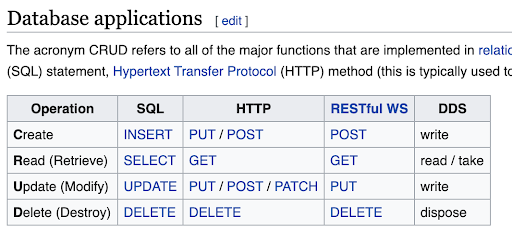
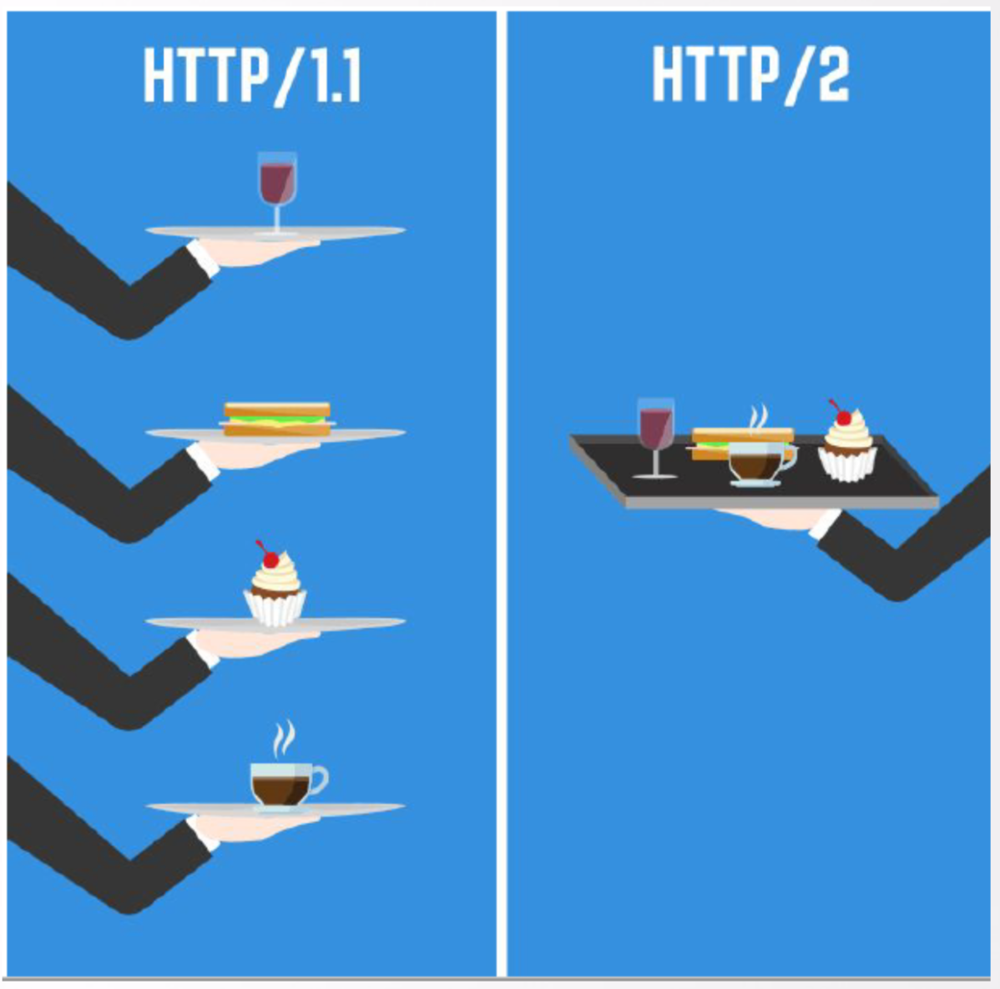
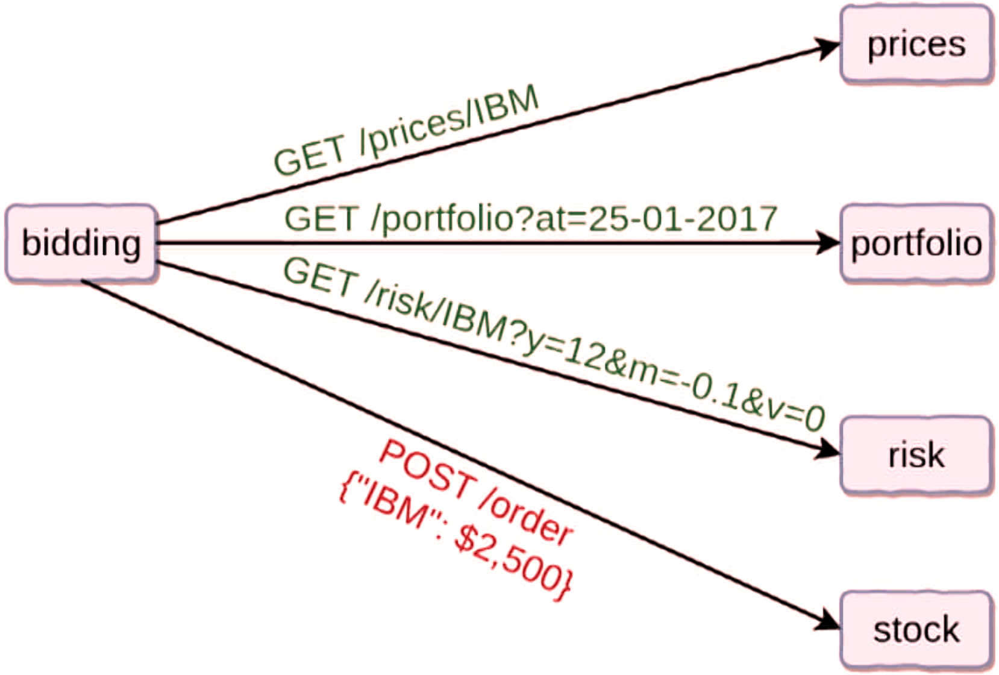
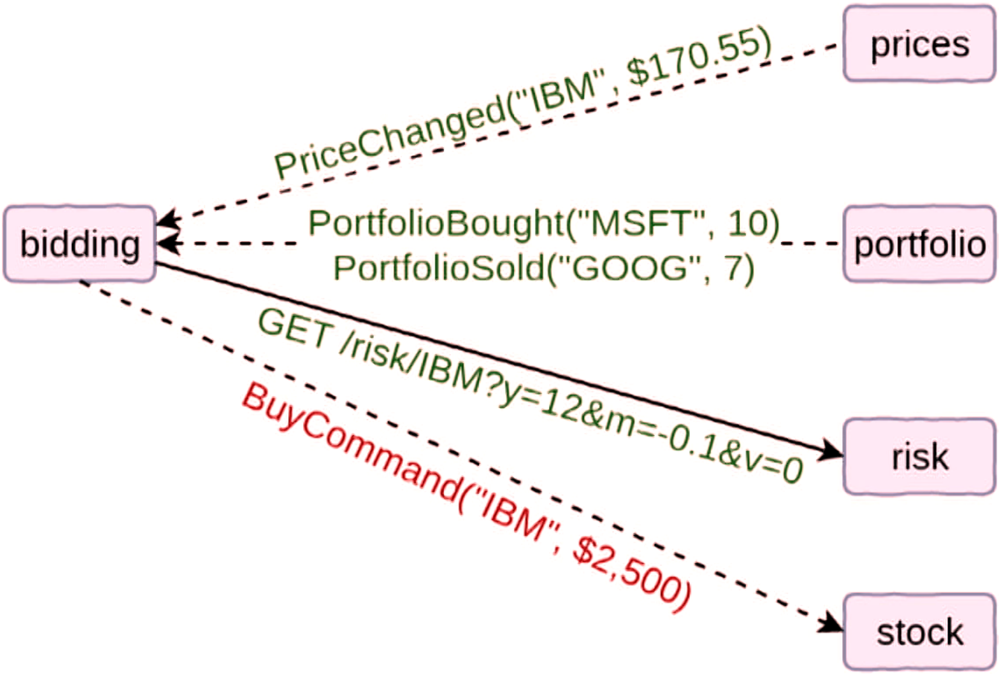

Architektura mikroserwisów
REST, CQRS, NoSQL

Poznajmy się
Faza 1 - modularny monolit
- Dobre praktyki w projektowaniu i implementacji REST API
- Techniki i frameworki pozwalające skalować systemy rozproszone
- Przegląd baz danych NoSQL, zastosowanie i użycie w mikroserwisach
- CQRS i Event Sourcing
Jak to monolit?
| Modularny monolit | Mikroserwisy |
| Monolit | Rozproszony monolit |
Rozgrzewka
Uruchomić Mongo:
docker run -d -p 27017-27019:27017-27019 --name microservices mongo
Potem i tak się przyda
REST, serwisy?

HTTP - 1/2
- W internetach HTTP jest wszechobecne!
- Najpopularniejszą metodą protokołu HTTP jest GET; są jeszcze inne (PUT, POST, DELETE, ...)
- Przeglądarka wysyła żądanie (request) HTTP GET pod adres, np. google.pl
- W odpowiedzi (response) dostajemy jakiegoś tam HTML-a - naszą stronę
- Strona dociąga kolejne rzeczy, kolejnymi requestami: obrazek, JS-a, JSON-a, XML-a, ...
HTTP - 2/2
- Mamy jakiś kod na serwerze, wystawiony po HTTP
- Klienty odpytują naszą aplikację.
Klienty?
- Front-end w przeglądarce na kompie
- Front-end w przeglądarka na smartfonie
- Apka na smartfonie
- Inne aplikacje serwerowe (mikroserwisy)
REST
- REpresentational State Transfer
- Zmiana stanu poprzez reprezentacje
- Odwołujemy się do źródeł/zasobów/rzeczowników, np. host/api/customers
- Deklaratywnie - taki stan chcemy osiągnąć
- Jak? Robota serwera
- Mocne wykorzystanie HTTP
- Architektura - ogólne wytyczne
Główne metody
GET- dej mie toPOST- weź toPUT- podmień toPATCH- zaktualizuj toDELETE- usuń to- OPTIONS, HEAD, TRACE
CRUD

Rodzaje metod
- Bezpieczne = nie modyfikują źródeł; można prefetchować, cache'ować
- OPTIONS, GET, HEAD
- Idempotentne = zawsze ten sam wynik
a=4vs.a++- W teorii: OPTIONS, GET, HEAD, PUT, DELETE
- W praktyce: PATCH - często, DELETE - różnie
- POST - nigdy
statusy odpowiedzi
Ćwiczenie
 
https://root/api/?
content negotiation

query param
- https://duckduckgo.com/?q=mistrz
- Dla metody GET jedyna szansa, żeby przesłać jakieś informacje (brak body)
- Możliwe też dla innych metod (content negotiation)
- ?, &, %20
':' |
'/' |
'?' |
'#' |
'[' |
']' |
'@' |
'!' |
'$' |
'&' |
"'" |
'(' |
')' |
'*' |
'+' |
',' |
';' |
'=' |
'%' |
' ' |
%3A |
%2F |
%3F |
%23 |
%5B |
%5D |
%40 |
%21 |
%24 |
%26 |
%27 |
%28 |
%29 |
%2A |
%2B |
%2C |
%3B |
%3D |
%25 |
%20 or + |
Nagłówki
- Accept, Content-Type
- Typy MIME: application/json, text/plain, text/html, text/html, text/css
- Cookie
- Authorization
Ciało
- "Content-Type" opisuje, co jest w ciele
- Ciało odpowiedzi dopasowane do nagłówka "Accept" zapytania
| SOAP | REST |
| Jeden sposób wysyłki | Różne znaczenie metod HTTP |
| Zachowania (czasowniki) | Źródła/zasoby (rzeczowniki) |
| Niejednoznaczność statusów: 404, 200 zamiast 201 | Statusy odpowiedzi łatwe w interpretacji |
| Problemy np. z przekierowaniem | Obsługa przekierowań |
| Schemat, możliwość generowania kodu | Brak |
| XML | Różne formaty, głównie JSON |
| Dojrzalszy, wiadomo, czego się spodziewać | Dojrzalszy, jeśli chodzi o integrację z HTTP |
| Protokół | Architektura |
Nieustandaryzowane, warte wzmianki
- Wersjonowanie
- Stronicowanie
- Szukanie/filtrowanie
- Dokumentacja/schemat
Próby naprawy
- RAML
- WADL
- RSDL
- swagger
- HATEOAS
HATEOAS
12345
100.00
How to GET a Cup of
Coffee
GraphQL - następny krok?
Jak SOAP
- Jeden endpoint
- Jedna metoda HTTP
- Schemat
Jak REST
- JSON w odpowiedzi
- Zasoby a nie metody
- Ograniczona lista zachowań
- Command & Query
REST/HTTP a Java
- HttpServlet + Servlet Container (Tomcat, Jetty)
-
JAX-RS i Jersey
@Path("/myResource") @Produces("text/plain") public class SomeResource { @GET public String doGetAsPlainText() { // ... } @GET @Produces("text/html") public String doGetAsHtml() { // ... } } - Spring
Spring
-
@RestController,@ResponseBody -
@RequestMapping,@PostMapping,@GetMapping,@PutMapping,@DeleteMapping -
@PathVariable,@RequestBody,@RequestParam -
ResponseEntity,Resource
Building REST services
with Spring
Building a RESTful Web
Service
Druga strona medalu
Ćwiczenie 1
- Pobrać zaczętą i omówioną aplikację
- Odpalić testy. Co przechodzi, a co wymaga poprawek?
- Dopisać brakujące rzeczy w testach
Controllera - Zaimplementować, żeby testy przechodziły
- Uruchomić Mongo, uruchomić aplikację (moduł
monolith) - Przeklikać REST API:
- Stworzyć przykadowy task
- Przeczytać taski w przeglądarce, przeczytać konkretny task
- Zaktualizować opis taska
- Dodać kolejny task, usunąć
HTTPS, HTTP/2?
- HTTPS = szyfrowane połączenia
- Certyfikaty wystawiane przez CA (Certificate Authorities), którym przeglądarki ufają

Powiązane, pomocne
Faza 1 - modularny monolit
- Dobre praktyki w projektowaniu i implementacji REST API
- Techniki i frameworki pozwalające skalować systemy rozproszone
- Przegląd baz danych NoSQL, zastosowanie i użycie w mikroserwisach
- CQRS i Event Sourcing
Fallacies of distributed computing
- The network is reliable
- Latency is zero
- Bandwidth is infinite
- The network is secure
- Topology doesn't change
- There is one administrator
- Transport cost is zero
- The network is homogeneous
Ready to fail - 1/2
- Eventual consistency
- Service discovery, scentralizowana konfiguracja
- Load balancing
- Circuit breaker
- Fail fast
- Rolling deployment
- Async by default
- At-Least-Once Delivery
Ready to fail - 2/2
- OAuth2, JWT
- Metryki, monitoring
- Logi, tracing
- Testy kontraktowe
- API Gateway
- Saga, Process Manager
async > sync
 Frameworki
- Spring Boot, Cloud
- Axon Framework
- Awesome Microservices
Ćwiczenie 2 - 1/2
- Skorzystać ze start.spring.io
- Wyklikać:
- Java 11, Maven
- Spring Data MongoDB, Embedded MongoDB Database
- Rest Repositories
- Nazwa i opis: plans, Management of the project plan
- Zmienić projekt w pom.xml na wzór poprzedniego - testy Groovy itd. Dodać zależność do pozostałych plików pom (parent, monolith)
- Zmienić główną klasę programu na konfigurację, dodać konwertery dla Mongo (tak jak w poprzednim module)
- Pobrać pliki z folderu "app", dodać je do aplikacji i przeanalizować
- Wyszukać jak w Springu dodać obsługę dla
javax.validation.constraints.NotBlank - Stworzyć repozytorium, żeby móc odpalić jego test. Skorzystać z adnotacji
@RepositoryRestResourcei wystawić całość jako "plans"
Ćwiczenie 2 - 2/2
- Skorzystać z CURL-a albo Postmana, żeby stworzyć kilka przykładowych zapytań.
- Czy walidacje działają jak należy? Czy status odpowiedzi jest zgodny z oczekiwaniami?
- Skonfigurować parsowanie daty i walidacje przy pomocy klasy
RepositoryRestConfigurer - Skonfigurować, żeby całość była wystawiona jako
/api/plans, a nie/plans - Jak działa HTTP PATCH przy wysłaniu
projectStepsdo obiektu, który już ma jakieś kroki? - Przetestować różne opcje
page,size,sort
Powiązane, pomocne
- Toruń JUG #32 - "Asynchronous by default, synchronous when necessary" - Tomasz Nurkiewicz
- Boiling Frogs 2019 - Jakub Kubryński - Kuloorporna komunikacja w systemtach rozproszonych
- 4Developers 2019: Distributed journey, Piotr Gankiewicz
- Designing a Microservices Architecture for Failure
- Expose Your Spring Data Repositories as a REST API
Faza 1 - modularny monolit
- Dobre praktyki w projektowaniu i implementacji REST API
- Techniki i frameworki pozwalające skalować systemy rozproszone
- Przegląd baz danych NoSQL, zastosowanie i użycie w mikroserwisach
- CQRS i Event Sourcing
Założenia
- Nawet nie tyle NoSQL, co "nieleacyjne"
- Ruch "Polyglot Persistence" = Not Only SQL
- Wygoda używania - brak ścisłych schematów
- Ale możliwość stworzenia np. jakichś walidacji
- Skalowalność, działanie w świecie rozproszonym
- Brak relacji = szybkość odczytu
- Bardziej "obiektowa" reprezentacja danych
- Praktycznie zawsze Open Source, a na pewno budowane z otwartych technologii
Złoty młotek?
- Koniec końców i tak potrzebni są admini, zarządzający klastrami itd.
- Każda baza ma swój język. Jednak znany wszystkim SQL to duży plus
- Zamiast JOIN-ów, konieczność wielu małych zapytań
- CAP?
| SQL Terms/Concepts | MongoDB Terms/Concepts |
| table | collection |
| row | document or BSON document |
| column | field |
| index | index |
Różne bazy
- Relacyjne
- Ustrukturyzowane dane z relacjami i językiem zapytań
- NoSQL
- Klucz-wartość
- Dokumentowe
- Wide column
- Grafowe
- Inne (time series)
- Klucz-wartość, Data-Structures Server
- In-memory, ale można też zrzucać dane
- Obsługuje różne struktury - stringi, zbiory, listy, bitmapy, streamy
- Na dysku - format nienadający się do odczytu, a tylko do rekonstrukcji trzymania w pamięci
- Superszybki dzięki temu in-memory

- Baza dokumentowa z binarnym zapisem danych (BSON = Binary JSON)
- Indeksowanie, szukanie po regexach
- Load balancing przy wyskalowaniu horyzontalnym
- Agregowanie danych
- Transakcje, nawet na wiele dokumentów (od v4)
- Taki NoSQL dla SQL-owców

- Baza grafowa, jedna z najpopularniejszych
- Wszystko jest węzłem, krawędzią lub atrybutem
- Węzły i krawędzie mają dodatkowo etykiety, żeby ułatwiać szukanie
- Cypher Query Language - możliwości SQL-a, ale składnia dostosowana do grafów
Ćwiczenie 3
- Zapoznać się z zapytaniami Mongo, korzystając z interaktywnej strony Query Documents
- Zainstalować plugin do Mongo dla IntelliJ
- Dodać więcej tasków i wyszukać:
- Tylko zrobione taski
- Taski, których id zawiera jakiś ciąg znaków, np. "4bc"
- Taski, których deadline jest sprzed jakiejś daty, np. przed 18.11.2019
- Taski, których deadline jest sprzed jakiejś daty lub po prostu go nie ma
- Taski, których deadline jest sprzed jakiejś daty lub po prostu go nie ma i są zrobione
- SQL to MongoDB Mapping Chart
Hibernate?
-
org.springframework.data.mongodb.core.mapping -
@Entity=>@Document -
@Column=>@Field -
javax.validation.constraints
Ćwiczenie 4
- Napisać wszystkie zapytania z poprzedniego ćwiczenia, korzystając z
TaskMongoRepository - Sprawdzić działanie w teście
Mongo w Springu
# MONGODB (MongoProperties)
spring.data.mongodb.authentication-database= # Authentication database name.
spring.data.mongodb.database= # Database name.
# Fully qualified name of the FieldNamingStrategy to use.
spring.data.mongodb.field-naming-strategy=
spring.data.mongodb.grid-fs-database= # GridFS database name.
spring.data.mongodb.host= # Mongo server host. Cannot be set with URI.
# Login password of the mongo server. Cannot be set with URI.
spring.data.mongodb.password=
spring.data.mongodb.port= # Mongo server port. Cannot be set with URI.
spring.data.mongodb.repositories.type=auto # Type of Mongo repositories to enable.
# Mongo database URI. Cannot be set with host, port and credentials.
spring.data.mongodb.uri=mongodb://localhost/test
spring.data.mongodb.username= # Login user of the mongo server. Cannot be set with URI.Powiązane, pomocne
Faza 1 - modularny monolit
- Dobre praktyki w projektowaniu i implementacji REST API
- Techniki i frameworki pozwalające skalować systemy rozproszone
- Przegląd baz danych NoSQL, zastosowanie i użycie w mikroserwisach
- CQRS i Event Sourcing
A gdyby tak...
- System to komendy i odczyty + zdarzenia
- Zachowania
- Warto stawiać na zachowania - łatwiej wychwycić reguły biznesowe (np. w rozmowie z "biznesem")
- CQRS + ES!
Command
- Zmienia stan
- POST, PUT, PATCH, DELETE
- Wychodzi od użytkownika, skutkuje zmianą w systemie (zdarzeniem)
- Potencjalnie jakieś automaty, nie tylko użytkownicy
Query
- Bezinwazyjny odczyt danych
- GET
- Prezentowanie dla użytkownika
Responsibility Segregation
- Podział. Osobne modele do odczytu i do zapisu
- Mogą być zoptymalizowane - np. do odczytu baza relacyjna, do zapisu - Cassandra
- Synchronizacja danych - model odczytu reaguje na zdarzenie, wygenerowane przez zapisy
Event Sourcing
- Niemutowalny, append-only log zdarzeń
- To tak można?
- Np. w księgowości - nie da się zmienić wystawionej faktury. Faktura-korekta
- "Lekka" wersja - model zapisu rzuca eventy, model odczytu nasłuchuje
- 100% - zdarzenia jako jedyne źródło informacji

Powiązane, pomocne
- Martin Fowler, CQRS
- JDD 2017: EventSourcing i CQRS. Wprowadzenie, którego brakowało (Sławomir Jachowicz)
-
all-things-cqrs; polecam:
with-application-events-immutable
Faza 2 - mikroserwisy
- Mikroserwisy
- Service registration and discovery, routing, distributed configuration
- Load balancing and Circuit Breakers
- Continuous Integration i Continuous Deployment w kontekście mikroserwisów
Fallacies of distributed computing
- The network is reliable
- Latency is zero
- Bandwidth is infinite
- The network is secure
- Topology doesn't change
- There is one administrator
- Transport cost is zero
- The network is homogeneous
Modularność i rozproszenie
| Modularny monolit | Mikroserwisy |
| Monolit | Rozproszony monolit |
Zalety
- Można skalować tylko konkretny kawałek systemu
- Można skorzystać z różnych języków programowania, dostosowanych do problemu
- Wyciek pamięci? Inny problem? Powinien dotknąć tylko mikroserwisu
- Niezależność wdrożeń, każda część systemu rozwija się we własnym tempie
- Lokalny development - też tylko to, czego potrzebujemy
Ćwiczenie 9 - 1/2
- Pobrać projekt z folderu "app" - są tam wydzielone aplikacje, nie ma już monolitu
- W module-źródle zdarzeń (tasks)
- Dodać adnotację
@EnableBinding(Source.class)- możliwość wysyłania zdarzeń na jakiś konfigurowalny kanał - Wstrzyknąć klasę
SourcedoTaskService, dodać poleprivate Source sourcei skorzystać z niego do publikacji zdarzeniasource.output().send(MessageBuilder .withPayload(event) .setHeader(EVENT_TYPE_HEADER, event.getType()) .build()); - Wyrzucić ApplicationEventPublisher z TaskService
- Ustawić spring.cloud.stream.bindings.output - destination oraz contentType w application.yml
- Dodać adnotację
Ćwiczenie 9 - 2/2
- W module-odbiorcy zdarzeń (reports)
- Dodać
@EnableBinding(Sink.class) - Podmienić w Listenerze - metody mają mieć TYLKO
i kolejne conditiony -@StreamListener( target = Sink.INPUT, condition = "headers['type'] == 'done'" )created,undone - Skonfigurować jak poprzednio, ale input
spring.cloud.stream.bindings.input- destination oraz contentType
- Dodać
Faza 2 - mikroserwisy
- Mikroserwisy
- Service registration and discovery, routing, distributed configuration
- Load balancing and Circuit Breakers
- Continuous Integration i Continuous Deployment w kontekście mikroserwisów
Service discovery
- Książka telefoniczna do usług
- Każda usługa, która startuje, powinna zgłosić swoją gotowość
- Sprawdzanie, czy zarejestrowana usługa odpowiada
- Bonusy: miejsce, skąd usługi mogą zaciągać konfiguracje
Powiązane, pomocne
Faza 2 - mikroserwisy
- Mikroserwisy
- Service registration and discovery, routing, distributed configuration
- Load balancing and Circuit Breakers
- Continuous Integration i Continuous Deployment w kontekście mikroserwisów
Load balancing
- Rozrzucanie ruchu pomiędzy różne instancje każdej usługi
- "Serwerowy" - np. przy Consulu i nam rozdziela ruch arbitralnie
- Po stronie klienta - mamy zrzut adresów usług, z którymi rozmawiamy
Circuit Breaker
- Odciążanie usług, które mają problemy
- Wolna odpowiedź (latency), zła odpowiedź, brak instancji, bandwith, retry, cache
- NIE Hystrix
Faza 2 - mikroserwisy
- Mikroserwisy
- Service registration and discovery, routing, distributed configuration
- Load balancing and Circuit Breakers
- Continuous Integration i Continuous Deployment w kontekście mikroserwisów
CI, CD
- Podstawa = automatyzacja, one-click deploy
- CI = synchro z głównym kodem
- CD (Delivery) = procesy testowania i wdrażania zautomatyzowane, można wrzucać
- CD (Deployment) = każda zmiana przechodząca testy wchodzi na PROD
Dockerfile
FROM adoptopenjdk:11-jre-hotspot
ENV SPRING_PROFILES_ACTIVE=prod
ENV SERVER_PORT=8080
ENV SPRING_OUTPUT_ANSI_ENABLED=ALWAYS
COPY target/*.jar app.jar
CMD java -jar /app.jar
EXPOSE ${SERVER_PORT}
Ćwiczenie 14
- Dodać wszędzie pliki dockerowe
- Skorzystać z opisu plugina mavenowego i tworzyć obraz, np. "microservices/tasks" dla usługi "tasks"
- Ustawić, żeby plugin odpalał budowanie dockerem dopiero przy mvn package
- Dodać to w każdej usłudze i zawołać clean package z poziomu projektu parent.
- Zweryfikować istnienie obrazów poleceniem docker images
Ćwiczenie 15
- Otworzyć kod z folderu "app"
- W obrazach dockerowych dodać opóźnienie startu aplikacji
- Skorzystać ze zmiennej środowiskowej ENV DELAY_START=0
- Zmienić komendę startującą:
CMD echo "The application will start in ${DELAY_START}s..." && sleep ${DELAY_START} && java -jar /app.jar
- Przeanalizować plik docker-compose-tools.yml - uruchomienie zewnętrznych narzędzi
- Stworzyć docker-compose-apps.yml, który skorzysta z naszych obrazów, np.
"microservices/tasks". Ustawić kontenerowi zmienne, które nadpiszą wartości np. z
bootstrap.yml albo application.yml
- SPRING_CLOUD_CONSUL_HOST=consul
- SPRING_CLOUD_CONSUL_PORT=8500
- SPRING_DATA_MONGODB_URI=mongodb://mongo:27017
- SPRING_CLOUD_STREAM_KAFKA_BINDER_BROKERS=kafka
- SPRING_CLOUD_STREAM_KAFKA_BINDER_ZK_NODES=zookeeper
- DELAY_START=10
- Ustawić mapowania portów, np. 8082:8080 - to co w kontenerze jako 8080, u nas 8082
- W przypadku serwisu tasków dodać mapowanie 8083-8085:8080
- Zatrzymać wszystkie dockery i uruchomić: docker-compose -f docker-compose-tools.yml -f docker-compose-apps.yml up. Pod jakim adresem jest usługa tasków?
- Zawołać
docker-compose -f docker-compose-tools.yml -f docker-compose-apps.yml up --scale tasks=3 -d